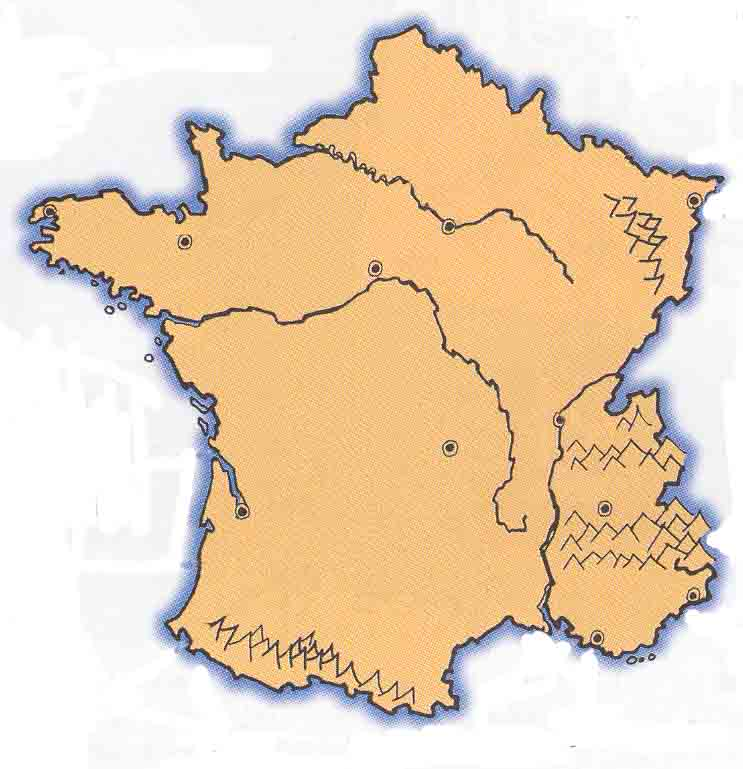

For the Chapter
8 Quiz, be prepared to locate the following on a map of France:
Les chaînes de montagnes principales
Les Alpes
Les Vosges
Les Pyrénées
Les fleuves principaux
la Loire
la Seine
le Rhône
Les étendues d'eau importantes
l'Atlantique: la côte atlantique
la Manche
la Mer Méditerranée: la Côte d'Azur
Les villes principales
Paris
Bordeaux
Lyon
Marseille
Nice
Rennes
